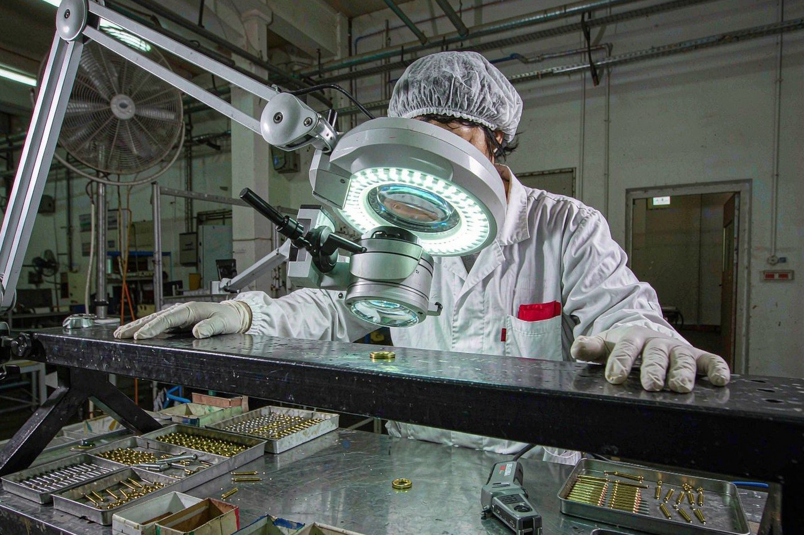
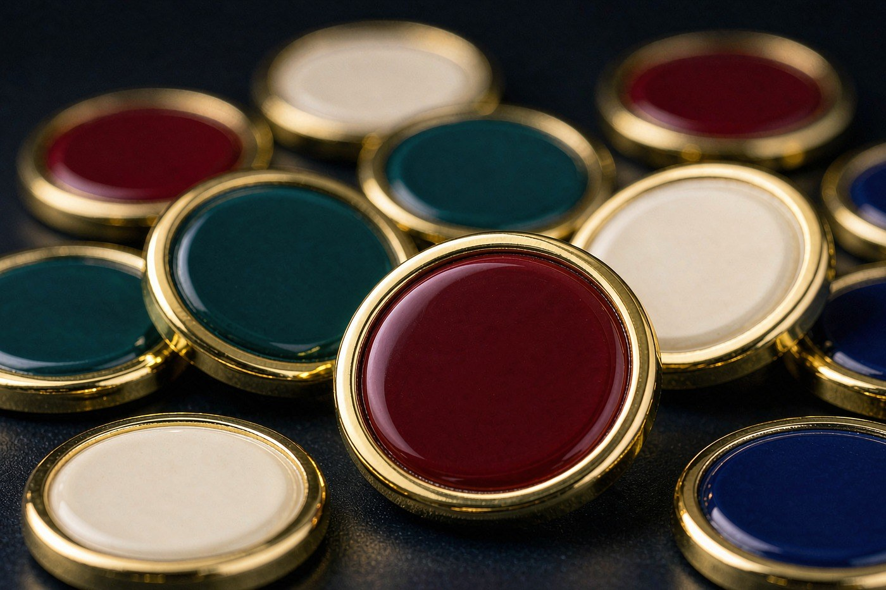
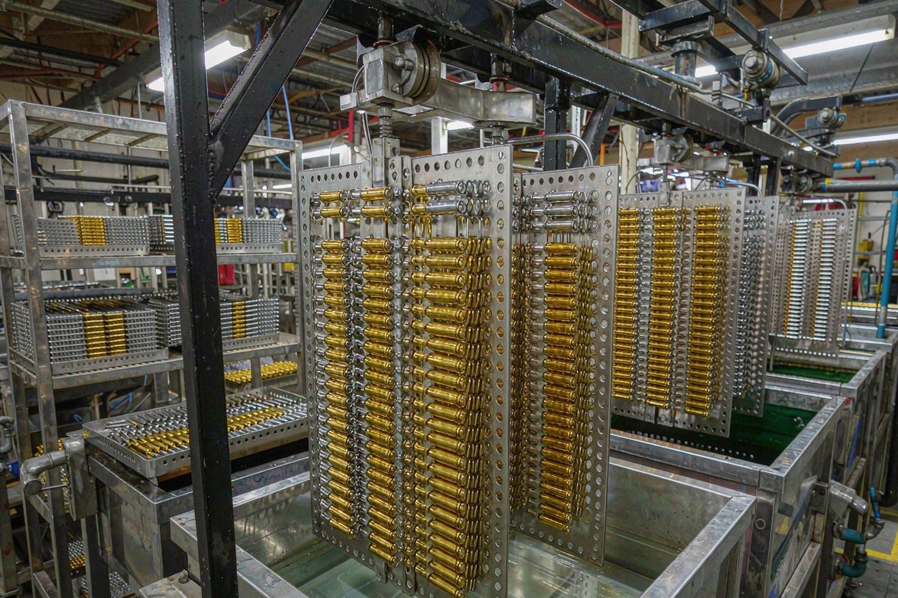

The hardest moment in an order like this is not the artwork or the price. It is the carton arriving and the buyer opening it, wondering whether the pins inside are what was approved. That uncertainty is not a personality trait of the buyer. It is the result of a supplier who never said what happens between the enamel bench and the seal.
So this is the guide to what we actually do. Six inspection points, each one attached to a handover between two workshops rather than to the end of the line. Each point has a named defect list and a named method. And each point leaves a record, so that when the carton is opened on your side, the claim on the packing list is a claim you can check rather than a claim you have to trust.

Six checkpoints, not one final look
The single most common misunderstanding about factory inspection is that it happens at the end. It does not. If a defect is only found at the packing bench, the people who can fix it are three workshops away and the run is already made. So inspection is attached to each handover, where the defect still belongs to whoever just made it.
These are the checkpoints we work to, and they are the same specification sheet we quote against.
| Checkpoint | What is inspected | Method |
|---|---|---|
| After stamping | Blank shape, relief depth, edge burr, planarity | Visual against the approved sample, plus a thickness check |
| After polishing | Surface scratches, dull areas, metal line definition | Visual under daylight LED magnifiers |
| After plating | Coverage, thickness, lead content, colour consistency | XRF tester on every rack, plus visual comparison to the standard panel |
| After enamelling | Fill level, colour match, dust in recesses, bubbles | Visual against the approved sample under magnifiers |
| After assembly | Clutch fit, post alignment, backing card condition | Pull test on every back, visual on every card |
| Before packing | Count per carton, carton marking, product mix, label accuracy | Two-person count and seal, recorded against the order |
Read the table as a chain of responsibility rather than a list. A burr found at the stamping checkpoint is a five-minute fix on a die. The same burr found at the packing bench is a re-make. That is the whole argument for inspecting early, and it is also why the inspection cost is carried in the price of the order rather than bolted on at the end.
Colour is checked against a reference, not against an opinion
Enamel is a solid material matched to a Pantone reference. It does not blend, it does not have a memory of the colour you wanted, and it does not care what the screen showed you. It is liquid pigment, and it either sits within the tolerance of the reference or it does not.
That is why colour matching here is a measurement rather than a judgement. Both hard enamel and soft enamel are held within one Pantone step on a calibrated line, and the reference is held against the approved sample throughout the run instead of being re-mixed at the start of each batch. Bulk colour accuracy is handled by twenty-four calibrated dispensing robots, with eighteen hand-colouring specialists taking over the micro recesses the machines cannot reach.

There is a practical consequence here for the artwork itself. If the design needs a gradient, enamel cannot hold it, because a solid material matched to a Pantone reference does not blend. A gradient has to be resolved into discrete bands, and on a pin small enough to wear, those bands either show visible steps or disappear. If the artwork carries a gradient or a photograph, the process that can hold it is offset printed, and our design file specifications set out exactly where that line falls.
The plating rack is measured before it leaves the workshop
Lead content is the one number in this industry that gets treated as paperwork, and it is the one number that should not be. Plating chemistry is a chemical bath, and what comes out of it depends on the bath, the thickness and the timing, none of which a certificate can prove after the fact.
So it is measured. XRF spectrometry runs on every plated rack before it leaves the workshop, which means lead and cadmium content is confirmed by measurement rather than asserted on paper. A licensed in-house plating line with a copper strike under the plating gives uniform thickness on complex shapes, and rack-to-rack colour matching keeps a reorder consistent with the original run.

Twelve plating and surface finishes run on that line, from bright 24K gold through antique gold and matte ruthenium to black nickel with the surface glare taken off. They are not a single menu with one price, which is why the plating stage appears as its own line in a quotation. Our plating finishes guide explains what each of the twelve is and how the older finishes are produced.
The back of the pin gets tested too
A pin that looks perfect on the front and has a loose clutch is a pin that comes off in a pocket and is lost. The back is not an afterthought on this line, because every back gets a pull test and every backing card gets a visual check.
The clutch itself is chosen against the fabric and the weight together, not against the design. A butterfly clutch with a rubber PVC cap is the default on every standard pin, and the cap is what stops the clutch marking a shirt or a jacket. But a clutch that suits a shirt may not hold a heavy badge on a coat, which is why heavier pieces take a safety pin, a screw back, a magnetic back or a double clutch instead. Our lapel pin backings guide sets out all five and how each one is fixed to the piece.
The paperwork that travels with the order
Certificates issued against a generic file are worth very little, because they describe a process rather than a product. Ours are issued against the alloy and the finish actually shipped.
- ISO 9001:2015. Our quality management system covers tooling, production, plating, inspection and export packing, from the first article through to the packed carton.
- BSCI social compliance. A third-party audit covering working hours, wages, health and safety and working conditions across the workshop, renewed on an annual cycle.
- RoHS. Restricted hazardous substance compliance for the plated and enamelled components we produce, supported by XRF testing on plating racks.
- CPSIA, California Proposition 65, EU REACH and EN71-3 on request, with EN71-3 and CPSIA testing run against the actual production batch.
The standards themselves are published and can be read directly. The US Consumer Product Safety Commission sets out the total lead content requirement for children's products on its total lead content guidance page, the European Commission publishes the RoHS Directive that our plated components are produced to, and the EU Toy Safety Directive 2009/48/EC on EUR-Lex sets out how EN 71 harmonised standards are used for conformity assessment.
The record that comes with the goods
Every piece is inspected under daylight before it is packed, and the inspector's name goes on the batch record. That record travels with the order, and it is the reason a claim about quality can be settled with evidence rather than with argument.
The payment structure follows the same logic. A deposit releases the mould cut and the production slot. The balance is due after inspection passes and before dispatch. That ordering matters: it means the inspection happens while the goods are still ours, not after they have been handed to a carrier and reached a warehouse three thousand kilometres away.
For higher volume runs there is one more step. Alongside the sample before release, the first produced pieces are checked before the rest of the run is committed, which catches a specification problem while it is still cheap to fix.
What happens when something fails
A piece that fails any of these checks is reworked or re-made. It goes back to the bench that made it.
That is worth stating plainly, because there is a common practice in this industry of separating the failures into a cheaper carton and shipping them quietly alongside the good pieces. It makes the unit number look right and hands the problem to the buyer. We do not do it, and the reason is structural rather than moral: there is no third party here to hide behind, and no shipment to send while the issue is discussed.
It also means the inspection is worth something. A checker who is allowed to reject is doing a different job from a checker who is only allowed to count.
What to do before you commit
None of this inspection replaces a sample. It sits after the sample in the sequence, and the sample is still the step that settles the question fastest. Buyers checking whether the workshop behind the order is a real factory will find the factory and trading company guide covers where inspection sits in that question.
- Order a physical sample first. A flat render shows you the shape. A physical sample shows you the weight, the plating, the colour against your own artwork and how the clutch feels. The sample is produced on the tooling the production run will use, and the sample cost is credited against the production order.
- Write the Pantone references as text. Not as a colour swatch in a photograph, and not as a screenshot. Text survives the email chain; a screenshot of a screen does not, because every display renders it slightly differently.
- Approve the CAD proof before the mould is cut. Once the proof is approved the design is locked, because changing it afterwards means a new mould. Iterate on the proof, where corrections are free.
- Tell us the destination market. Compliance requirements for lead content, phthalates and finish emissions differ between markets, and the documentation is issued against your market rather than a generic file.
- Ask for the finish kit if the finish is open. The same design across twelve plating finishes is the standard choice when the artwork is settled and only the finish is undecided.
Our samples and prototyping page sets out the four kinds of sample and what each one can and cannot tell you, and our bulk order guide covers the full sequence from artwork to cartons.
Questions buyers ask about inspection
Every single piece. Inspection happens at each handover between workshops rather than as a final glance at a finished carton, so a defect is caught by the people who can still fix it. A run that fails inspection is reworked, not shipped.
Enamel is a solid material matched to a Pantone reference, so it is compared against the approved sample and a calibrated reference panel under daylight. Hard enamel and soft enamel are both held within one Pantone step on the calibrated line, and the reference is kept for the whole run rather than re-mixed at the start of each batch.
XRF spectrometry runs on every plated rack before it leaves the workshop, so lead and cadmium content is confirmed by measurement rather than by paperwork. XRF testing on plating racks supports the lead-free requirement in most destination markets, and RoHS, CPSIA, California Proposition 65, EU REACH and EN71-3 testing is available on request.
Clutch fit, post alignment and the condition of the backing card. Every back gets a pull test, and every card gets a visual check. The clutch is chosen against the fabric and the weight of the design, so the backing matters as much as the face.
It goes back to the bench that made it and is reworked or re-made. Failing pieces are never separated into a cheaper carton and shipped quietly. If a problem is found after the run, it goes back to the workshop that made it, because there is no third party to hide behind.
The payment structure is a deposit to release the mould cut and the production slot, and a balance after inspection passes and before dispatch. That means the inspection happens before the balance is due, not after. For higher volume runs there is also a pre-production check on the first produced pieces before the rest of the run is released.
Yes, provided the sample was approved and the specification has not changed. The sample is produced on the same tooling and the same plating standard as the production run, and the enamel reference is held against the approved sample throughout the run. If the specification changes after the sample, the order is re-quoted because the result changes.
Yes. Certificates are issued against the alloy and the finish actually shipped, not a generic file. Our quality management system covers tooling, production, plating, inspection and export packing, from the first article through to the packed carton, and we hold ISO 9001:2015 quality management and BSCI social responsibility audit certificates.
Ask for a physical sample of the design in the finish you intend to order, and ask which inspection checkpoints apply to your process. A sample is produced on the tooling the production run will use, and the sample cost is credited against the production order, so it is the cheapest way to settle plating, colour and clutch before the run is committed.